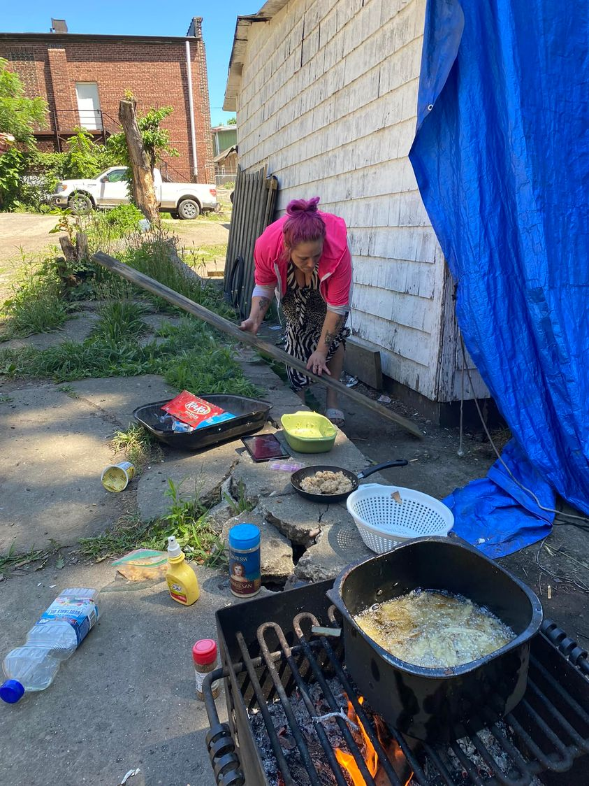

Mobile uploads
This is Kristyn cooking dinner in June 2022. I think she’s frying chicken on an outdoor grill. She’s a GREAT cook.
You all have been so beautiful and wonderful in caring for Kristyn after I told you about her horrendous beating she received from her boyfriend.
People have offered her clothes and supplies and one incredibly generous supporter has bought her a week stay at a motel. She’s given me the money.
All I need to do is get her to the motel. And that is going to be the real challenge.
The mainstream narrative is that homeless people “don’t want help.” They would rather do drugs on the street than go into a shelter or follow any rules.
The truth behind that narrative is MUCH more complicated.
Kristyn is sick and tired of the street life. She hates being around seriously mentally ill people constantly. She hates people stealing her stuff all the time. She hates the men she attracts. She hates every single thing about this life.
I am constantly telling her to quit it. To leave it.
Her response is that when her mom died she promised to take care of her sister who is also on the street. So she can’t leave.
I think the real reason is debilitating fear and anxiety. I have a theory that extreme fear, depression and anxiety drive long term homelessness. And the lack of safety and security along with anxiety-producing street drugs, makes the situation even worse. They would rather live in the hellhole they have than try anything different.
I looked all over yesterday for Kristyn. I never found her. But eventually someone lent her their phone to call me. I told her about the motel offer. She had never heard of this motel before (it’s a very well known place in the Akron homeless community).
I don’t think she’s ever stayed one night in a motel in all the years she’s been on the streets.
She was blown away by this incredible gift.
It was 5pm. I said I could come pick her up and take her to the motel right then. She got real quiet. I could feel her fear over the phone.
I said, “Would you like to go tomorrow?”
“Yes!”
So that’s today. I’m going to try to do my best to see if I can get her to go to the motel. It’s cold and she’s hurting. But will those factors be worse than the fear she’s feeling for trying something different? I can’t be at all certain she’ll go. And that’s totally cool.
I tell you these stories so that you get a small glimpse of people you may never meet in person but possibly have some prejudgments about. That’s a very human thing to do. It’s a very natural survival instinct.
But nothing about a human being is simple and cut and dry. There may be nothing messier in the universe than a human being.
We only move to the next stage of our human existence when we let go of ancient, chimpanzee-level hate and learn to become what we were always meant to be: observant, conscious, aware human beings.